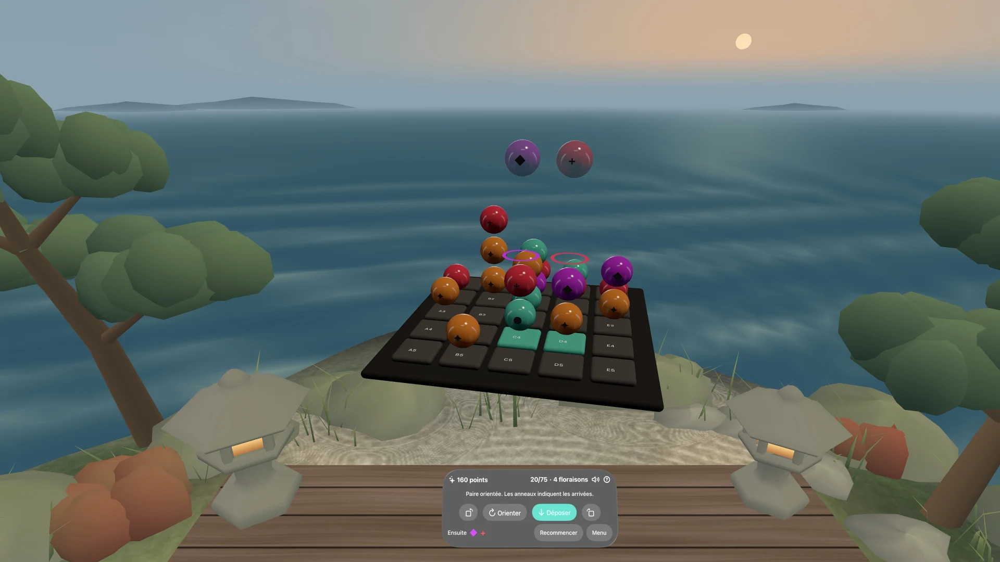
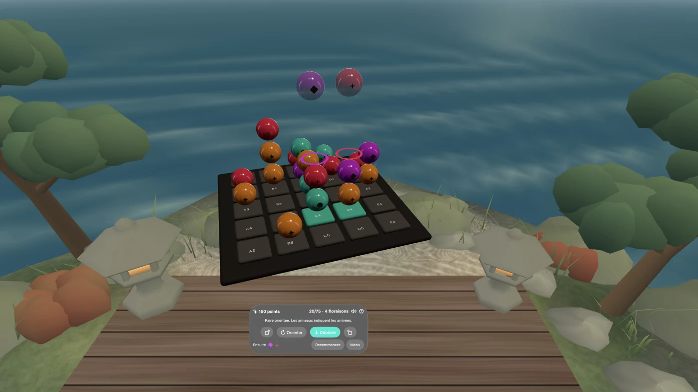
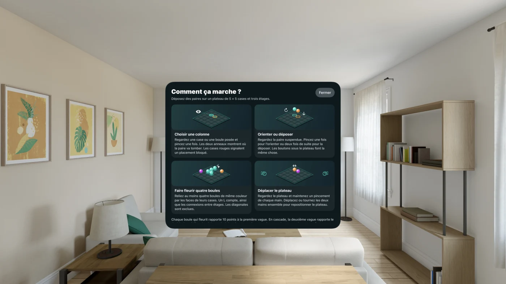

Un puzzle spatial pour Apple Vision Pro
Faites éclore
les couleurs.
Reliez des boules translucides dans un jardin au bord de la mer. Anticipez vos coups, tournez le plateau à deux mains et jouez à votre rythme.
Découvrez le puzzle à la souris, au toucher ou au clavier.

Le jeu
Quatre couleurs. Trois étages.
Déposez des paires sur un plateau de cinq cases par cinq. Reliez au moins quatre boules de même couleur par leurs faces pour les faire éclore. Les boules du dessus retombent et peuvent déclencher une cascade.
- Choisir une colonne
- Regardez une case et pincez pour la sélectionner. Les anneaux montrent où les boules vont se poser.
- Orienter et déposer
- Regardez la paire suspendue. Pincez une fois pour l’orienter ou deux fois pour la déposer.
- Voir tous les étages
- Maintenez un pincement de chaque main pour tourner ou déplacer le plateau en cours de partie.


Deux façons de jouer
Dans votre espace ou face à la mer
En mode normal, le plateau prend place dans votre espace. En immersion totale, vous jouez dans un jardin d’inspiration japonaise face à la mer. Une musique d’ambiance originale accompagne les deux modes.
La partie est sauvegardée sur votre Vision Pro pour pouvoir changer de mode et reprendre où vous en étiez.
Voir les gestes